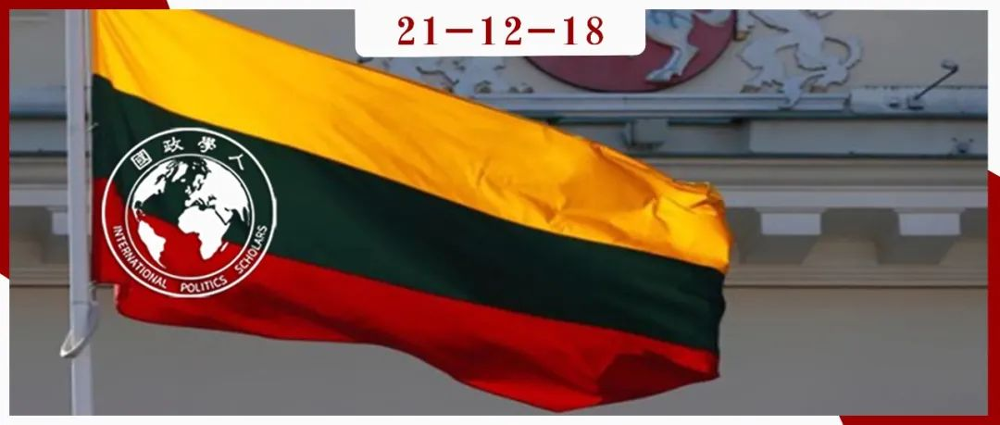

收录于合集
#《国际关系前沿》2021年第12期 22 个
#地缘政治 3 个

作品简介
作者： Ausra Park，锡耶纳学院国际关系学院副教授；Gerda Jakstaite- Confortola，立陶宛维托塔斯·马格努斯大学研究员。
编译： 张潇文（国政学人编译员，山东大学外国语学院法语（国际组织）专业）
来源： Ausra Park & Gerda Jakstaite-Confortola（2021）Small State Status- Seeking: Lithuania’s Foreign Policy Status Aspirations, Europe-Asia Studies , 73:7, 1279-1302.
归档： 《国际关系前沿》2021年第12期，总第39期。

内容摘要
无论大国还是小国，都可能而且有时确实以出人意料或明显不合理的方式行事。立陶宛自21世纪以来发起几项“不同寻常”的外交政策。例如，它雄心勃勃地提出“地区领导”的外交目标，并成为欧盟“东方伙伴关系”计划（EaP）的主要参与者和倡导者。如何解释立陶宛一类的小国看似不平常的外交行动？其背后目的是什么？本文关于国家地位寻求的探究则为我们解释这种行为提供了思路。
文章导读
在2004年成为北约和欧盟成员国后，立陶宛提出了成为“地区领导”的宏伟外交政策目标。在总统瓦尔达斯·阿达姆库斯（Valdas Adamkus）的领导下，立陶宛代表EaP国家乌克兰、格鲁吉亚和摩尔多瓦（后来被放弃）的利益，倡导并争取让这些国家加入欧盟以及北约。十年后，达利亚·格里包斯凯特（Dalia Grybauskaitė）总统在口头上挑战俄罗斯，尽管后者在面积和军事实力上都大大超越立陶宛，且还完全垄断了立陶宛的能源供应。
本文假设，促使小国以非常规方式行事的一个重要却常被忽视的动机，是它们对更高地位的追求。本文通过以下几个方面证明这种假设：首先，证明寻求更高地位是立陶宛发起有关EaP国家若干政策的一个重要因素；其次，展示立陶宛“塑造”EaP计划的雄心；第三，展示立陶宛如何利用其上升的地位来增强在欧洲和国际论坛的话语权；最后，证明对上升地位的利用又反过来巩固这一地位。
本文分为三个部分。首先，本文先展示了小国谋求国际地位的理论综述，并介绍了数据来源和使用的方法论。第二，本文运用社会认同理论（SIT）分析立陶宛的外交政策，并检验了该理论的解释力。最后文章评估了立陶宛新获得地位的寿命，并提出了这类弱小国家在未来为寻求地位的其他可能行动。
01
寻求地位作为小国外交策略的兴起
冷战结束后，学者将小国对地位的追求视为“小国外交政策背后的主要动机”，这不仅打破了现实主义和自由主义理论对国家外交政策分析（FPA）的垄断，还创新了解释国家行为差异和非理性行为的方式。当前，古典现实主义对任何国家外交政策行为的解释都强调权力，尤其是国家的军事能力；同时也强调国家威信，因为这决定于并反映了一个国家实际的物质能力。然而，非物质因素（除“软实力”外）已经被现实主义和新现实主义者们忽略了。建构主义也忽视了对地位作为国家行为动机的关注[1]，仅在约翰·加尔东（Johan Galtung）[2]和迈克尔·D·华莱士（Michael D. Wallace）[3]的作品中短暂出现了有关国家对地位的渴望与国家间冲突之间联系的研究。
21世纪，随着国际关系领域和其他学科（社会学、社会和政治心理学、行为经济学）交流融合，关于“地位寻求”的研究逐渐兴起。这些研究发现，寻求地位确实是决定国家行为的一个重要因素，影响着一个国家的外交政策姿态。而地位对所有国家都很重要，无论它们的规模大小或实力强弱。
但直到最近，关于地位寻求的研究只集中于挑战现有等级秩序的崛起大国或地缘政治背景下的国家，很少有对小国追求地位的研究。直到2015年德卡瓦略（de Carvalho）和诺伊曼（Neumann）开创性地将关于小国寻求地位的研究推向前沿。他们指出，小国与大国追求权力有三个方面的不同。第一，小国通过帮助大国来寻求和获得地位；第二，小国在国际和平与安全事务中“寻求被大国注意”；第三，小国寻求被公认为“好力量”（“好”表示既具有道德权威，又能成为大国的可靠伙伴）。[4]然而，对权力的追求通常与“硬实力”——这通常不是小国的选择——和“在国际和平与安全中发挥影响力”有关，寻求地位则一直是小国外交和安全政策的核心因素。[5]
虽然对小国地位寻求的研究已经很成熟，但对体量小且物质基础薄弱国家的研究尚不完善（意思是缺乏军事实力、经济实力、完善的政治结构、外交使团、智库等专业机构和人力资源的国家）。针对这种小国获取地位战略的初步研究应用了多学科的理论框架和方法，对不同地区的案例进行了研究。然而，大多数研究都是基于单个国家的案例，而缺乏对体量小且物质薄弱国家寻求地位的比较分析。
02
地位是如何被定义的
地位通常被认为等同于权力。然而，社会心理学和社会学对地位和权力的概念进行了区分：权力意味着强迫他人去做他们在其他情况下不会去做的事情（并最终影响他人的行为的能力），而地位被解释为一种社会地位。它是“集体的、主观的和相对的”[6]。它是集体的，因为地位反映了集体的信仰，超越了个体的国家观念，并取决于其他国家所持有的信念。地位是主观的，因为它取决于他人对国家地位的感知。而且，地位是相对的，因为它是相对于他人衡量的。地位是稀缺的，换句话说，所有国家不可能拥有相同的地位。然而，地位不是一个零和游戏，而是一个变量，因为在任何组织中都有可能存在争夺地位的行为，当新的属性代替其他属性的价值时，地位也会受到修改。在本文的案例研究中，立陶宛将自己与其他小的、后共产主义的、实力较弱的欧盟成员国——首先是邻国拉脱维亚和爱沙尼亚——相比较，并与之竞争。
以下几个为国家获得更高地位被认可的表现：一、成为国际组织或主要区域组织（如欧盟、20国集团、联合国安理会）的成员；二、在特殊俱乐部（OECD, OSCE, NATO）中的相对地位和外交灵活性；三、成为区域性组织或团体的领导；四、具有举办对国际社会具有重大意义的国际非军事活动的外交举措和能力（如：气候变化、消除贫困、奥林匹克运动会、网络安全、能源独立、国际卫生、金融稳定）；五、高层正式国事访问的频率；六、参与制定区域或全球议程；七、参与解决问题的非正式区域/全球团体；八、广泛的大使馆网络；九、形成影响世界政治的新规范；十、建立新的、更有利的身份；十一、超越竞争国家的经济增长率。地位不可能单方面实现，其实现必须依赖于其他国家的承认。
社会认同理论（Social Identity Theory, SIT）有助于阐明外交政策中的“非理性”国家行为。本文提出了三种可供国家使用的策略。首先是社会流动（social mobility）策略。在实施这一战略时，国家寻求被纳入或与更高地位群体的机构和俱乐部相联系，而前提是这一集团的边界是可渗透的。第二种策略是社会竞争（social competition），即当某一集团的边界不可渗透时，寻求地位的国家试图超越地位更高的对手。对抗的结果便是关于势力范围的军备竞赛或地缘政治竞争。无需多言，体量小且物质薄弱的国家无力承担这种战略。第三种策略是社会创造（social creativity），即将寻求地位国家的消极特征重新定义为积极特征，或者寻找一个新的不同的特征或标准来重新定位。具体来说，该策略包含推动新的国际准则、制度、制度；建立自由贸易区或新的发展模式；以及通过外交努力在国际制度中发挥突出作用、参与解决地区冲突等。值得一提的是，SIT策略不是相互排斥的，通常是同时使用的。
03
数据来源和方法
本文应用SIT框架分析立陶宛追求更高地位的外交政策。实证分析的数据来源有以下三个：首先，本文使用了立陶宛总统和外交部长在2004-2019年期间与EaP国家——特别是乌克兰和格鲁吉亚——有关的声明。其次，本文分析了相关事件，如立陶宛、乌克兰、格鲁吉亚之间的正式国事访问。第三，为了衡量立陶宛更高的地位成就，我们看立陶宛的努力和贡献是否得到了赞扬和重视。这些量化标准包括全球参与者（如欧盟，尤其是重量级的德国和美国）在他们的公开声明或政治行动中涉及立陶宛的次数；立陶宛在“最友好”或“最支持”国家类别中的排名；收到的投资和发展援助的数量；高层外事访问频率；该地区大使馆数量等。
04
地位的体现：立陶宛愿望的实现
1. 阿达姆库斯总统任期
**
**
立陶宛在2004年实现了两项主要的外交政策目标，即同时成为北约和欧盟的成员。社会流动战略的实施和成员资格标准的达成使立陶宛获得了一种新的地位——两大精英国际组织的成员资格。这一成就向立陶宛提出了一个新的挑战：需要确定新的外交政策目标。代理总统阿尔图拉斯·保劳斯卡斯（Artūras Paulauskas）是第一个公开提议立陶宛应立志成为“地区的一个中心和领导者”的人，尤其关注东部的后苏联加盟共和国（即乌克兰、白俄罗斯和摩尔多瓦）。两个月后，新当选的总统瓦尔达斯·阿达姆库斯（Valdas Adamkus）重申了这个想法。
立陶宛的新外交政策于2005年开始成形，最终聚焦于几个后苏联时期的东欧国家：乌克兰、白俄罗斯和摩尔多瓦，随后又加入了南高加索地区，特别是格鲁吉亚。立陶宛意识到只有对EaP国家采取积极姿态，才会引起西方伙伴的兴趣。
2. 重点关注乌克兰（和格鲁吉亚）
**
**
1991年至2003年间，立陶宛与乌克兰的双边关系相当普通。乌克兰总统列奥尼德·库奇马（Leonid Kuchma）1994-2005年的“多向量”外交政策，据称是寻求平衡东西方的利益，不允许乌克兰与欧盟、北约或俄罗斯主导的组织有密切关联。直到2004年，立陶宛成为欧盟和北约成员国，并确立了新的外交政策目标。巧合的是，橙色革命和乌克兰旷日持久的政治危机为立陶宛提供了支持黑海地区民主化的机会，并推进本国“区域领袖”的主张。阿达姆库斯多次发起斡旋，促使两位乌克兰总统候选人——维克托·尤先科（Viktor Yushchenko）和维克托·亚努科维奇（Viktor Yanukovich）——化解选举僵局，并举行另一轮选举，最终尤先科获胜。
阿达姆库斯对乌克兰内政的积极参与和橙色革命所达成的和平成果在国际和国内被称赞为立陶宛外交政策的重大胜利，这间接验证其追求“地区领袖”的可行性和合理性。布什总统本人和国务卿康多莉扎·赖斯（Condoleezza Rice）就曾公开称赞立陶宛帮助EaP国家（特别是乌克兰和格鲁吉亚）走出政治危机的外交行动。美国甚至寻求阿达姆库斯的对于地区的“专业知识”和他的“建议”。阿达姆库斯因此获得了美国在该地区的“亲密伙伴”的承认，并成为该地区值得信赖的信息来源。
然而，从欧盟的角度来看，阿达姆库斯与波兰总统合作解决乌克兰政治危机的战略，很快就引起了法国和德国的不满。立陶宛总统调解人的角色无疑增加了立陶宛在欧盟的能见度和分量，况且更为谨慎的法国和德国等欧盟成员国不愿与俄罗斯发生可能的冲突。欧盟高级官员批评波兰和立陶宛的调停努力，声称两位总统都是在美国的影响下行事的，与大多数欧洲国家的立场不同。立陶宛决策迅速，而经常忽视其他欧盟成员国对乌克兰和格鲁吉亚的看法，且不愿与欧盟妥协。
总的来说，在阿达姆库斯担任总统期间，立陶宛在乌克兰和格鲁吉亚的外交政策举措表明，其社会创造力战略在实现预期的更高地位方面取得了部分成功。美国承认立陶宛是一个对美国有用的“好力量”（Good power）。然而，由于德国和法国不承认其努力，也不认可它对地区和平与安全的贡献，立陶宛在塑造欧盟EaP并获得地区领导地位的雄心在很大程度上破灭了。
3. 达莉娅·格里包斯凯特总统任期
**
**
作为前欧盟财政和预算专员，立陶宛新任总统达莉娅·格里包斯凯特（Dalia Grybauskaitė）表示要调整国家外交政策，这导致立陶宛对EaP采取了更加谨慎的态度。但当立陶宛在2011年担任欧安组织主席，并在2013年下半年担任欧盟理事会主席时，它对黑海国家，尤其是乌克兰的关注加强了，其目的是借此时机提升在欧盟的曝光度。2014年至2018年，立陶宛向乌克兰提供的发展援助达到1150万欧元；2005年至2019年期间，这一数量仅为190万欧元。根据经济合作与发展组织（OECD）的数据，立陶宛向乌克兰和格鲁吉亚提供的发展援助超过了同等地位的国家。此外，立陶宛还在联合国安理会多次发起关于乌克兰持续敌对行动的讨论。立陶宛尤为大胆的举动是，它在2014年主动与波兰和乌克兰建立了联合军事单位立陶宛- 波兰-乌克兰联合旅（LITPOLUKRBRIG）。此外，它决定为受伤的乌克兰士兵提供医疗和军事援助，这无疑将立陶宛与其同等地位的国家区分开来。
2014年，格里包斯凯特赢得第二个任期，她公开声明继续为乌克兰提供坚定支持，同时将乌克兰的事件置于更广泛的欧洲背景下。她曾警告欧盟，俄罗斯正试图重新绘制战后的欧洲地图，俄罗斯吞并克里米亚是“新冷战的序幕”。与此同时，立陶宛大力支持乌克兰加入欧盟。它呼吁欧盟对俄罗斯实施更多的经济制裁、为乌克兰制定了全面援助方案、支持乌克兰和格鲁吉亚公民在欧盟免签证通行。自2014年俄罗斯吞并克里米亚以来，立陶宛就主动肩负起哨兵的任务：提醒欧盟警惕俄罗斯的威胁以及它公然破坏欧洲价值观和结构的野心。立陶宛外交围绕该国作为欧洲价值观和规范以及欧盟安全的不懈捍卫者的义务，构建了一种官方话语，以帮助乌克兰。由此观之，立陶宛利用社会创造战略创造了一个独特的标准，这有助于该国对地位的追求。
到2019年，立陶宛对更高地位的追求似乎得到了回报，其努力得到了欧盟、美国甚至北约的承认，同时也得到了地位较低的受益国，即乌克兰和格鲁吉亚的承认。例如，德国总理默克尔和格里包斯凯特总统建立了密切的个人关系。另外，立陶宛和奥巴马政府也增加了双边正式访问。甚至时任北约秘书长延斯·斯托尔滕贝格（Jens Stoltenberg）也承认了立陶宛对北约的重要意义以及格里包斯凯特发挥的重要作用。同样，地位较低的国家也多次承认立陶宛取得了较高的地位。乌克兰和格鲁吉亚政府多次认可和赞赏立陶宛的贡献及其领导作用。乌克兰的民意调查显示，从2017年起，立陶宛连续三年成为对乌克兰最友好的国家。除了主要领导人对立陶宛努力的承认，外国主要媒体——《经济学人》、《纽约时报》、《财富》和《华尔街日报》都承认格里包斯凯特的个人影响力。
无论是公开致谢和声明还是多次高层访问，似乎都证实了本文的中心理论：立陶宛利用其在后苏联地区的参与，特别是通过EaP计划，以获得更高的地位，事实的确如此，在2009年至2019年期间，立陶宛外交利用社会创造战略，最终成功地将其国家地位从EaP的“接受者”之一转变为“塑造者”。
05
结论：利用新获得的地位？
在后冷战环境下，追求地位的机会大大增加。正如分析显示，即使是弱小的国家也在利用社会流动和社会创造战略，从而对重要的国际问题施加影响，这使得像立陶宛这样的国家在国际舞台上得到注意，被其他国家承认其贡献，并成为一个“塑造者”，而不是一个“接受者”。即使是小和物质上薄弱的国家可以在政治、经济、军事上帮助大得多的国家（乌克兰），并捍卫欧洲的价值观、规范和安全。立陶宛对乌克兰和格鲁吉亚内政的参与，以及它在欧盟内部对EaP国家的政治话语的重塑，使它能够创造一个新的标准，通过这个标准，它可以被积极地评价。同时，立陶宛与那些新兴的、后共产主义的、弱小的欧盟成员国形成了鲜明的对比，并最终脱颖而出，成为波罗的海国家的领导者。
新获得的更高地位促使立陶宛在塑造“东方伙伴关系”方面又迈出了一步。2019年4月，立陶宛外交部长利纳斯·林克维丘斯（Linas Linkevičius）敦促欧盟为该地区创建一个长期的愿景和目标。同时，立陶宛恳求欧盟成员国大胆地利用EaP国家的专业知识来解决紧迫的移民、边境保护和恐怖主义挑战。
像立陶宛这样的小国还会采取哪些其他寻求地位的行动呢？毕竟地位不是一个常数，而是一个变量。自格里包斯凯特于2019年7月结束第二任期以来，新总统吉塔纳斯·瑙塞达（Gitanas Nausėda）面临着一个巨大的挑战：立陶宛能否保持其获得的更高的地位？另一个未知数是，在2019年上台的泽连斯基（Volodymyr zelensky）的领导下，乌克兰将如何展开政治改革？除非在对抗寡头政治和腐败方面取得进展，否则西方对乌克兰的关注可能会进一步减弱，立陶宛在欧盟代表乌克兰的立场也会随之减弱。如果出现这种情况，立陶宛可能会再次使用社会创造战略，因为它在选择（甚至发明新的）地位寻求的标准上提供了最大的灵活性。
译者评述
本文运用地位寻求的理论框架，即用社会认同理论来解释一个体量小且物质上薄弱的国家的非常规外交政策选择。本文通过分析立陶宛雄心勃勃地参与欧盟“东方伙伴关系”（EaP）计划来“以小博大”来证明：这一类小国的非常规外交政策的最终目的是追求更高的国际地位。
受到主流国际关系理论的影响，权力似乎总是解释国家外交行为的最好答案。但本文另辟蹊径，提出了对解释国家——尤其是物质薄弱的小国——的非理性外交行为的一种新的视角，且创新了之前基于单个国家案例的研究，从而进行了对小国寻求地位的比较分析。本文采用社会认同理论，提出了三种小国获取国家地位的策略，即社会流动，社会竞争和社会创造。本文通过对立陶宛的案例分析，主要介绍了社会创造战略的合理性。本文采取实证分析的方式，搜集了其他国家关于立陶宛外交的声明、具体外交事件、领导人发言和媒体报道等有关数据。数据具有历史性、多样性和合理性。但译者认为，本文缺少对其他两种战略的对比分析，导致社会认同理论对于小国非理性外交行为的解释力仍有瑕疵。
这篇文章创新性地关注物质薄弱的小国，提醒我们小国也有争取国际地位的野心，且给予我们解释小国看似不合理的外交行为的新视角。最近立陶宛在台湾问题上不断挑衅中国，其大胆的外交行为或许可以从本文找到解释。
参考文献
[1]Stolte, C. (2015) Brazil’s Africa Strategy: Role Conception and the Drive for International Status (New York, NY, Palgrave Macmillan).
[2]Galtung, J. (1964) ‘A Structural Theory of Aggression’, Journal of Peace Research , 1, 2.
[3]Wallace, M. D. (1971) ‘Power, Status, and International War’, Journal of Peace Research , 1, 1.
[4]de Carvalho, B. & Neumann, I. B. (eds) (2015) Small States and Status Seeking: Norway’s Quest for International Standing(London, Routledge).
[5]Pedersen, R. B. (2018) ‘Bandwagon for Status: Changing Patterns in the Nordic States Status-Seeking Strategies?’, International Peacekeeping , 25, 2.
[6]Larson, D. W. & Shevchenko, A. (2014) ‘Russia Says No: Power, Status, and Emotions in Foreign Policy’, Communist and Post-Communist Studies , 47, 3.
词汇整理
地位寻求 Status-seeking
东方伙伴计划 Eastern Partnership programme (EaP)
社会认同理论 Social Identity Theory(SIT)
外交政策分析 Foreign policy analysis(FPA)
责编 | 朱晓洁 罗洁
排版 | 屈媛媛 邱意雯
文章观点不代表本平台观点，本平台评译分享的文章均出于专业学习之用, 不以任何盈利为目的，内容主要呈现对原文的介绍，原文内容请通过各高校购买的数据库自行下载。

国政学人
支持学术公益与知识传播
微信扫一扫赞赏作者 __赞赏
已喜欢，对作者说句悄悄话
取消 __
发送给作者
发送
最多40字，当前共字
上一页 1/3 下一页
长按二维码向我转账
支持学术公益与知识传播
受苹果公司新规定影响，微信 iOS 版的赞赏功能被关闭，可通过二维码转账支持公众号。